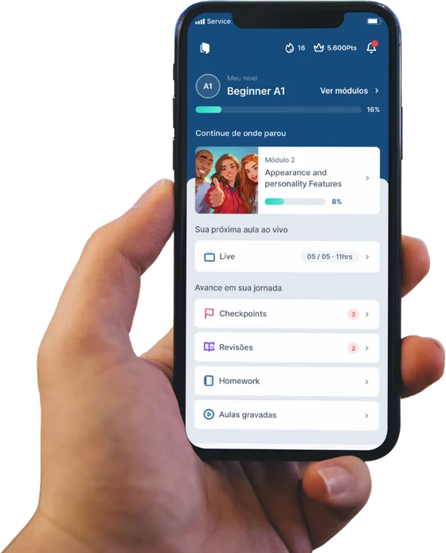
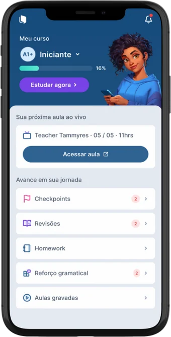
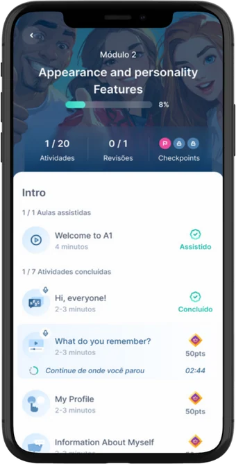
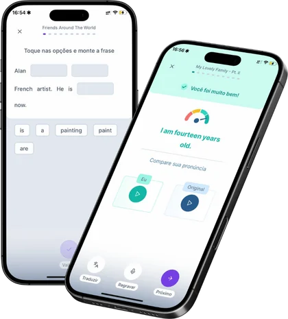
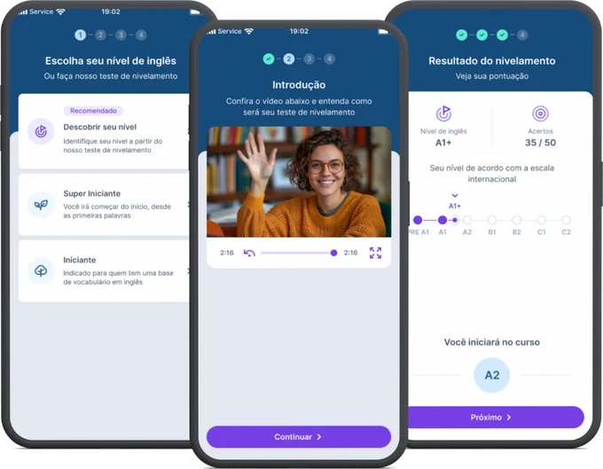

Flexge: o material didático que faz cada aula render mais.
Uma plataforma digital de ensino de inglês, alinhada ao CEFR, que o aluno usa entre as aulas. Assim, o tempo ao vivo é dedicado ao que mais importa: praticar, conversar e tirar dúvidas.
A Flexge é a plataforma parceira que uso nas minhas aulas.

Uma plataforma completa de estudo.
A Flexge reúne nivelamento, conteúdo, prática, testes e relatórios em um só lugar. O aluno acessa pelo celular, computador ou tablet, no seu próprio horário.
Teste de nivelamento
Avaliação digital que define o nível inicial e a trilha de estudo mais adequada para cada aluno.
Trilha de aprendizagem
Conteúdo do A1 ao C2, alinhado ao CEFR, com a gramática apresentada dentro de contextos reais de comunicação.
Feedback de pronúncia
O aluno grava a própria voz e a IA da plataforma compara com o áudio original das questões, gravado por professores ou falantes nativos de inglês, dando uma nota e apontando o que melhorar.
Relatórios de estudo
Cada exercício gera dados que mostram ao professor como, quanto e com que qualidade o aluno estudou.
Como o aluno enxerga a Flexge.
Telas reais do aplicativo: o aluno vê o nível, a próxima aula ao vivo, as lições do módulo e a prática de pronúncia.



Estudar antes para aproveitar a aula ao vivo.
A Flexge é a base da sala de aula invertida: o aluno tem contato com o conteúdo antes da aula, e o encontro com o professor é usado para praticar de forma ativa. A gramática chega no momento em que o aluno precisa dela.
Estudo guiado
O aluno estuda as lições na plataforma, no próprio ritmo, e chega à aula já familiarizado com o conteúdo.
Prática ativa
O professor consulta os dados do aluno e usa o tempo ao vivo para conversação, dúvidas e prática, com foco nas dificuldades reais.
Reforço contínuo
Exercícios, revisões e testes reforçam gramática, estrutura e vocabulário de inglês geral e fixam o que foi visto.
Na aula, a gente pratica.
Na Flexge, o aluno constrói a base.
Da primeira lição ao certificado.
Nivelamento
Um teste inicial define o ponto de partida e a trilha certa. Ninguém começa no lugar errado.
Quatro habilidades
Listening, speaking, reading e writing, com ênfase em ouvir e falar, desde o começo.
Prática de pronúncia
A IA compara a voz do aluno com o áudio original das questões, gravado por professores ou nativos, em qualquer lugar e horário.
Skills Test e certificados
O Skills Test é um teste por nível que avalia cada habilidade separadamente: listening, speaking, reading e writing. Ao final, o aluno recebe certificados de conclusão e de competência de nível, alinhados ao CEFR, o padrão internacional de avaliação.
O estudo do aluno, visível para o professor.
No painel do professor, cada aluno tem um histórico de desempenho. Isso permite aulas personalizadas e intervenções no momento certo.
Tempo de estudo
quanto o aluno estudou na semana
Dias estudados
a regularidade do estudo
Units resolvidas
o avanço dentro da trilha
Study quality
a nota de qualidade do estudo
Meta semanal
Professor e aluno combinam uma meta de estudo semanal, medida por tempo, units ou study quality. A meta padrão é de 1 hora de estudo por semana.
Motivação
Ranking opcional, avanço por fases e pontuação de qualidade de estudo mantêm o aluno engajado.
O que o aluno ganha.
Descubra seu nível de inglês.
Faça o teste de nivelamento da Flexge e veja em qual nível do CEFR você está. É o ponto de partida para montar a trilha de estudo certa.
Fazer o teste de nivelamento ↗
Quer ver a Flexge na prática?
Fale comigo e conheça a plataforma e como ela entra nas aulas.
info@teacherpatricia.net
Flexge é a plataforma parceira que uso nas minhas aulas. Imagens e selo cedidos pela Flexge. Informações: flexge.com e knowledge.flexge.com.